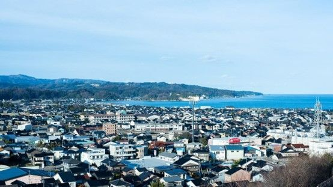

訪問者の体験
他の人々が氷見市について何と言っているかをご覧ください

Sahaaoon
Kasugai, Jepang - 12.782 kontribusiマンガ通り近くの鮮やかな神社
Jan 2024 • Bisnis
主祭神は天照大神で、氷見マンガ通り近くにある、藤子・F・不二雄Aに関連する光善寺です。最近、初詣（神社への初めての参拝）が行われたばかりだと思いますが、回復を願うばかりです。

dyraft
Tokyo, Jepang - 8.432 kontribusi素晴らしい地元の食べ物と風景
Dec 2023 • Wisata
ここでの食べ物は絶品で、景色は息をのむほど美しいです。家族と一緒に氷見を探検したのは忘れられない体験でした。
